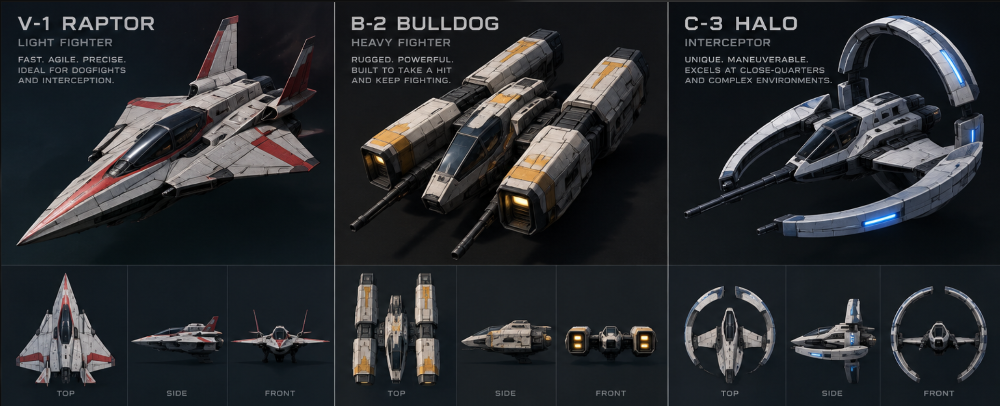

<!doctype html><html lang="en"><head><meta charset="utf-8"><meta name="viewport" content="width=device-width,initial-scale=1"><link rel="stylesheet" href="../styles.css"><title>Concept ships  Driftworks</title><style>
body{margin:0;background:#080f16;color:#d9e8ec;font:14px/1.6 system-ui}#viewer{position:fixed;inset:0 0 0 330px;width:calc(100% - 330px);height:100%}.scene3d-controls{display:none}aside{position:fixed;z-index:5;top:20px;left:20px;width:270px;padding:20px;background:#101e2ced;border:1px solid #405867;border-radius:8px;max-height:85vh;overflow:auto}h1{font-size:23px;line-height:1.2}label{display:block;margin:16px 0 5px}select,button{background:#182d3c;color:inherit;padding:8px;border:1px solid #5a7e90;border-radius:4px;font:inherit;max-width:100%}button{margin:3px 0}a{color:#a9e7dc}#metadata{white-space:pre-line}small{color:#a1b4bf}footer{position:fixed;bottom:16px;right:20px;pointer-events:none}@media(max-width:650px){aside{top:5px;left:5px;width:calc(100% - 50px);max-height:35vh;padding:15px}#viewer{inset:43vh 0 0;width:100%;height:57vh}footer{font-size:11px}}</style></head><body><div id="viewer" class="scene" aria-label="3D concept ship preview"></div><aside><small>DRIFTWORKS / MODEL EXPERIMENT 01</small><h1>From concept<br>to low-poly ship</h1><label for="model">Airframe</label><select id="model"><option value="raptor">V-1 Raptor  light fighter</option><option value="bulldog">B-2 Bulldog  heavy fighter</option><option value="halo">C-3 Halo  interceptor</option></select><label for="revision">Geometry pass</label><select id="revision"><option value="refined">Refined geometry</option><option value="initial">First pass</option></select><label for="stage">Construction stage</label><select id="stage"><option value="0">01  Blockout</option><option value="1">02  Details</option><option value="2" selected>03  Texture & paint</option></select><p id="metadata">Loading mesh</p><p><button id="top">Top</button> <button id="side">Side</button> <button id="front">Front</button><br><button id="spin">Pause rotation</button> <button id="reset">Reset</button></p><p><a id="download" download>Download glTF</a>  <a href="../assets/ships/concept-trio/panels.png" download>Texture</a></p><small>Keep the texture beside the glTF when importing. Inferred from the supplied concept sheet; proportions and unseen surfaces are approximate. The three stages expose the modeling process.</small><details><summary>Concept reference</summary><a href="../assets/ships/concept-trio/reference.png" target="_blank" rel="noopener"></a><small>Open the sheet for full-size views.</small></details><p><a href="../assets/ships/concept-trio/README.md">Asset notes</a>  <a href="ship-packs.html">Existing ships</a></p></aside><footer>Drag to orbit  Wheel to zoom</footer><script>window.DRIFTWORKS_TEST_MODE=true;</script>
<script src="../vendor/pixi/pixi.min.js?v=20260912-launch1"></script>
<script src="../src/propulsion.js?v=20260920-population1"></script>
<script src="../src/combat.js?v=20260921-sensor-track1"></script>
<script src="../src/mining-lights.js"></script>
<script src="../src/mining-terrain.js"></script>
<script src="../src/mining-landing.js"></script>
<script src="../src/logistics.js?v=20260921-craft1"></script>
<script src="../src/formations.js?v=20260920-population1"></script>
<script src="../src/sim.js?v=20260922-cavern10"></script>
<script src="../src/population.js"></script>
<script src="../src/session.js"></script>
<script src="../src/tactical/camera.js?v=20260920-population1"></script>
<script src="../src/engine-audio.js?v=061d71eda9b0"></script>
<script src="../src/audio-mixer.js?v=86b2e5499688"></script>
<script src="../src/audio.js?v=4c3a1ddd049c"></script>
<script src="../src/hud.js?v=20260922-cavern1"></script>
<script src="../src/mesh-builder.js"></script><script src="../src/mining-rig.js?v=ebc32e1f4b09"></script><script src="../src/model-viewer.js?v=20261018-focus-flight3"></script><script src="../src/scene3d.js?v=20261018-focus-flight3"></script>
<script src="../src/game.js?v=20261007-3d-geology2"></script>
<script src="dom.js"></script><script src="concept-ships.js"></script></body></html>